EDx
Ch1. Container Orchestration¶
Learning Objectives¶
- Define the concept of container orchestration.
- Explain the reasons for doing container orchestration.
- Can not provision underlying architecture.
- Discuss different container orchestration options.
- Discuss different container orchestration deployment options.
Ch2. Kubernetes¶
Define Kubernetes.¶
"Kubernetes is an open-source system for automating deployment, scaling, and management of containerized applications."
- k8s
- based on Google's Borg
- API Servers
- Pods
- IP-per-Pod
- Services
- Labels
- Written in Go
- Apache License Version 2.0
- Google => CNCF July 2015
Explain the reasons for using Kubernetes.¶
Discuss the features of Kubernetes.¶
- Automatic binpacking
- Kubernetes automatically schedules the containers based on resource usage - and constraints, without sacrificing the availability.
- Self-healing
- Kubernetes automatically replaces and reschedules the containers from failed nodes. It also kills and restarts the containers which do not respond to health checks, based on existing rules/policy.
- Horizontal scaling
- Kubernetes can automatically scale applications based on resource usage like CPU and memory. In some cases, it also supports dynamic scaling based on customer metrics.
- Service discovery and Load balancing
- Kubernetes groups sets of containers and refers to them via a Domain Name System (DNS). This DNS is also called a Kubernetes service. Kubernetes can discover these services automatically, and load-balance requests between - containers of a given service.
- Automated rollouts and rollbacks
- Kubernetes can roll out and roll back new versions/configurations of an application, without introducing any downtime.
- Secrets and configuration management
- Kubernetes can manage secrets and configuration details for an application without re-building the respective images. With secrets, we can share confidential information to our application without exposing it to the stack configuration, like on GitHub.
- Storage orchestration
- With Kubernetes and its plugins, we can automatically mount local, external, and storage solutions to the containers in a seamless manner, based on software-defined storage (SDS).
- Batch execution
- Besides long running jobs, Kubernetes also supports batch execution.
Discuss the evolution of Kubernetes from Borg.¶
Explain what the Cloud Native Computing Foundation does.¶
- One of the projects hosted by The Linux Foundation
- CNCF hosts a set of projects, with more to be added in the future. CNCF provides resources to each of the projects, but, at the same time, each project continues to operate independently under its pre-existing governance structure and with its existing maintainers.
- containerd for container runtime
- rkt for container runtime
- Kubernetes for container orchestration
- Linkerd for service mesh
- Envoy for service mesh
- gRPC for remote procedure call (RPC)
- Container Network Interface (CNI) for networking API
- CoreDNS for service discovery
- Rook for cloud-native storage
- Notary for security
- The Update Framework (TUF) for software updates
- Prometheus for monitoring
- OpenTracing for tracing
- Jaeger for distributed tracing
- Fluentd for logging
- Vitess for storage.
For Kubernetes, the Cloud Native Computing Foundation:
- Provides a neutral home for the Kubernetes trademark and enforces proper usage
- Provides license scanning of core and vendored code
- Offers legal guidance on patent and copyright issues
- Creates open source curriculum, training, and certification
- Manages a software conformance working group
- Actively markets Kubernetes
- Hosts and funds developer marketing activities like K8Sport
- Supports ad hoc activities
- Funds conferences and meetup events.
Ch3. Kubernets Architecture¶
Terms:
- master
- worker nodes
- etcd
- Container Network Interface (CNI)
Discuss the Kubernetes architecture.¶
- 1+ Master Nodes
- 1+ Worker Nodes
- Distributed key-value store, like etcd
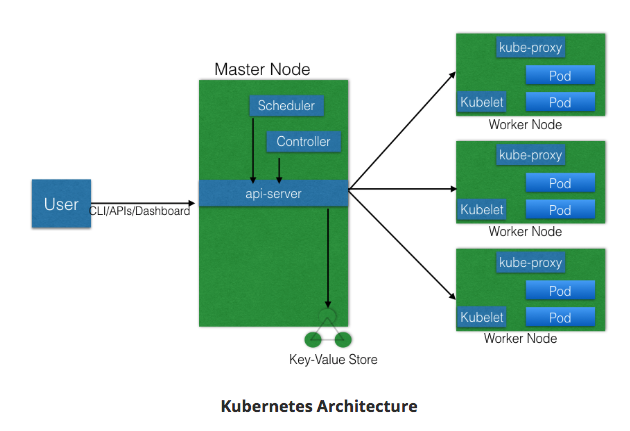
- If multiple Masters - only one in HA (High Availibility) mode.
- All Master nodes connect to etcd
- etcd is a distributed key-value store.
- KV store can be on Master, or separate with Master-KV connection.
- etcd is a distributed key-value store.
Explain the different components for master and worker nodes.¶
Master¶
API server¶
- accepts REST commands
- validates & processes commands
- After execution, state of cluster stored in distributed KV store.
Scheduler¶
- schedules work to different worker nodes.
- resource usage information for each worker node.
- knows of user/operator-set constraints
- considers:
- quality of the service requirements
- data locality
- affinity
- anti-affinity
- etc
- schedules in terms of Pods and Services.
Controller Manager¶
- manages non-termination control loops which regulate Kubernetes cluster state.
- Each control loop knows desired state of objects under management, watches state through API server.
- If current state != desired state then it corrects
etcd¶
- distributed KV store
- stores cluster state
Worker¶
- VM/Physical/etc running applications using Pods.
- Controlled by Master node.
- Pod is scheduling unit in k8s.
- Pod is logical connection of 1+ containers which are always scheduled together.
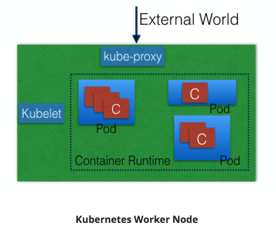
Container runtime.¶
- Ex: containerd; rkt; lxd
- Docker is a platform which uses containerd as a container runtime.
kubelet¶
- on each worker node - communicates with master node
- receives Pod definition (primarily thru API server)
- runs containers associated with Pod; keeps containers healthy
-
connects to container runtime using Container Runtime Interface (CRI)
- CRI consists of protocol buffers, gRPC API, libraries
-

-
kubelet (grpc client) connects to CRI shim (grpc server) - performs container/image operations.
- CRI two services:
- ImageService
- image-related operations.
- RuntimeService
- Pod & container-related operations.
- CRI allows k8s to use different container runtimes without need to recompile.
-
CRI Shims
-
dockershim
- containers created using Docker installed on worker nodes. Docker uses containerd to create/manage containers. 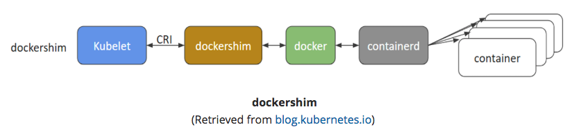
-
cri-containerd
- containerd directly - no Docker.

- containerd directly - no Docker.
-
CRI-O
- enables using Open Container Initiative (OCI) compatibile runtimes.
- supports runC & Clear Containers
- Any OCI-compliant runtime can be plugged-in.

-
- ImageService
kube-proxy¶
- Services group related Pods & load balances to them.
- network proxy on worker node
- listens to API server for Service endpoint creation/deletion.
- For each Service endpoint:
- kube-proxy sets up the routes
Discuss about cluster state management with etcd.¶
- Stores cluster state.
- etcd is distributed Key-Value store based on Raft Concensus Algorithm
- collection of machines work as group to survive failure of some members.
- one node will be master, rest followers. Any node can be treated as master.
- written in Go
- stores config details:
- subnets; ConfigMaps; secrets; etc

Review the Kubernetes network setup requirements.¶
-
A unique IP is assigned to each Pod
- Two Primary Specifications:
- Container Network Model (CNM) - Docker
- Container Network Interface (CNI) - CoreOS
- k8s uses CNI 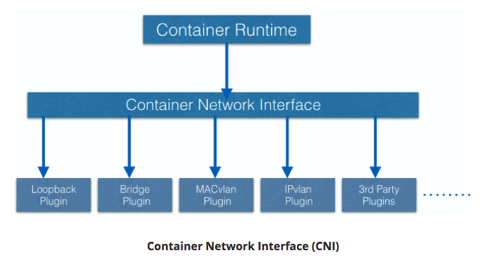
- container runtime relies on CNI for IP assignment.
- CNI connects to underlying configured plugin (Bridge or MACvlan) to get IPs.
- Plugin passes IPs to CNI which passes IP back to container runtime.
- Two Primary Specifications:
-
Containers in a Pod can communicate to each other
- The Pod is able to communicate with other Pods in the cluster
- If configured, the application deployed inside a Pod is accessible from the external world.
- Container runtime creates isolated network for each container that it starts: network namespace
- Can be shared across Containers or Host OS.
- Inside Pod - containers share network namespace - can reach each other via localhost.
- Pod-to-Pod Communication Across Nodes
- Pods scheduled on any node.
- Pods need to communicate across nodes - all nodes should be able to reach any Pod.
- k8s ideal constraint: No Network Address Translation (NAT) during Pod-to-Pod communication across hosts
- ^^ Achieved:
- Kubernetes Cluster Networking documentation
Ch.4 Installing Kubernetes¶
Discuss about the different Kubernetes configuration options.¶
All-in-One Single-Node Installation¶
With all-in-one, all the master and worker components are installed on a single node. This is very useful for learning, development, and testing. This type should not be used in production. Minikube is one such example, and we are going to explore it in future chapters.
Single-Node etcd, Single-Master, and Multi-Worker Installation¶
In this setup, we have a single master node, which also runs a single-node etcd instance. Multiple worker nodes are connected to the master node.
Single-Node etcd, Multi-Master, and Multi-Worker Installation¶
In this setup, we have multiple master nodes, which work in an HA mode, but we have a single-node etcd instance. Multiple worker nodes are connected to the master nodes.
Multi-Node etcd, Multi-Master, and Multi-Worker Installation¶
In this mode, etcd is configured in a clustered mode, outside the Kubernetes cluster, and the nodes connect to it. The master nodes are all configured in an HA mode, connecting to multiple worker nodes. This is the most advanced and recommended production setup.
Discuss infrastructure considerations before installing Kubernetes.¶
- Should we set up Kubernetes on bare metal, public cloud, or private cloud?
- Which underlying system should we use? Should we choose RHEL, CoreOS, CentOS, or something else?
- Which networking solution should we use?
- etc
Discuss infrastructure choices for a Kubernetes deployment.¶
Localhost Installation¶
On-Premise Installation¶
- On-Premise VMs
- On-Premise Bare Metal
- on top of OS
- RHEL, CoreOS, Fedora, Ubuntu, etc
- on top of OS
Cloud Installation¶
Hosted Solutions¶
- Google Kubernetes Engine (GKE)
- Azure Container Service (AKS)
- Amazon Elastic Container Service for k8s (EKS) - Currently in Tech Preview
- OpenShift Dedicated
- Platform9
- IBM Cloud Container Service
Turnkey Cloud Solutions¶
Bare Metal¶
- Various Cloud providers allow Bare Metal installations.
Review Kubernetes installation tools and resources.¶
kubeadm¶
- first-class citizen in k8s ecosystem.
- secure/recommended bootstrap of k8s.
- Contains building blocks to setup cluster.
- Easily extendable to add functionality.
- Does not provision machines
KubeSpray¶
- (formerly name: Kargo)
- Purpose: Install Highly Available k8s cluster on:
- AWS, GCE, Azure, OpenStack, bare metal.
- based on Ansible.
- Available on most Linux distributions.
- Kubernets Incubator Project
Kops¶
- Create/Destroy/Upgrade/Maintain production-grade, HA, k8s clusters from CLI.
- Can provision machines.
- AWS officially supported.
- GCE / VMware vSphere in alpha stage.
- ++platforms for future.
Ch.5 Setting Up a Single-Node k8s Cluster with Minikube¶
Discuss Minikube.¶
- runsin VM on Linux/Mac/Windows.
- Requirements:
- kubectl
- binary used to access k8s cluster.
- Minikube requires kubectl installation to operate, but not to install.
- On Linux:
- VirtualBox or KVM hypervisors.
- On macOS:
- Hyperkit driver, xhyve driver, VirtualBox, or VMware Fusion hypervisors.
- On Windows:
- VirtualBox / Hyper-V hypervisors.
- VT-x/AMD-v virtualization enabled in BIOS.
- Internet access on first run.
- kubectl
Install Minikube on Linux, Mac, and Windows.¶
Start Here: Github Installation directions.
Linux¶
# Install VirtualBox
sudo apt-get install virtualbox
# Install Minikube
curl -Lo minikube https://storage.googleapis.com/minikube/releases/v0.25.0/minikube-linux-amd64 && chmod +x minikube && sudo mv minikube /usr/local/bin/
# Validate Minikube installation
minikube start
minikube status
minikube stop
Mac¶
Install VirtualBox on macOS
# Install Minikube
curl -Lo minikube https://storage.googleapis.com/minikube/releases/v0.25.0/minikube-darwin-amd64 && chmod +x minikube && sudo mv minikube /usr/local/bin/
# Validate Minikube installation
minikube start
minikube status
minikube stop
Windows¶
-
Install VirtualBox
- Disable Hyper-V
- Windows support experimental
-
Download the Minikube binary from the Distribution section.
- Add Minikube binary to $PATH.
-
Set default VM driver for Minikube
PS C:\Windows\system32> minikube config set vm-driver virtualbox
# These changes will take effect upon a minikube delete and then a minikube start
- Validate Installation
PS C:\WINDOWS\system32> minikube start
PS C:\WINDOWS\system32> minikube status
PS C:\WINDOWS\system32> minikube stop
Ch.6 Accessing Minikube¶
Review methods to access any Kubernetes cluster.¶
Command Line Interface (CLI)¶
- kubectl
Graphical User Interface (GUI)¶
- Kubernetes dashboard
APIs.¶

- Three independent groups:
- Core Group (/api/v1)
- Pods, Services, nodes, etc
- Named Group
- objects in /apis/NAME/VERSION format
- API versions imply levels of stability/support:
- Alpha - may be dropped @ any point in time, without notice.
- Ex: /apis/batch/v2alpha1
- Beta - well-tested; semantics of objects may change
- Ex: /apis/certificates.k8s.io/v1beta1
- Stable - appears in released software for many versions
- Ex: /apis/networking.k8s.io/v1
- Alpha - may be dropped @ any point in time, without notice.
- System-wide
- system-wide API endpoints
- Ex: /healthz ; /logs ; /metrcs ; /ui ; etc
- system-wide API endpoints
- Core Group (/api/v1)
Configure kubectl for Linux, macOS, and Windows.¶
Linux¶
# Download latest stable kubectl binary
curl -LO https://storage.googleapis.com/kubernetes-release/release/$(curl -s https://storage.googleapis.com/kubernetes-release/release/stable.txt)/bin/linux/amd64/kubectl
# Make kubectl executable
chmod +x ./kubectl
# Move into PATH
sudo mv ./kubectl /usr/local/bin/kubectl
macOS¶
# Download latest stable kubectl binary
curl -LO https://storage.googleapis.com/kubernetes-release/release/$(curl -s https://storage.googleapis.com/kubernetes-release/release/stable.txt)/bin/darwin/amd64/kubectl
# Make kubectl executable
chmod +x ./kubectl
# Move into PATH
sudo mv ./kubectl /usr/local/bin/kubectl
OR using Brew:
brew install kubectl
Windows¶
-
Depending on latest release, DL kubectl binary
# Example download 1.9.3
curl -LO https://storage.googleapis.com/kubernetes-release/release/v1.9.3/bin/windows/amd64/kubectl.exe`
- Once downloaded - move kubectl binary to PATH
Access the Minikube dashboard.¶
minikube dashboard
or
kubectl proxy
Access Minikube via APIs.¶
With kubectl proxy¶
kubectl proxy
curl http://localhost:8001
Without kubectl proxy¶
- Use Bearer Token & kubectl
- Def: access token generated by authentication server (API server on master node) and given to client
# Acquire Token
TOKEN=$(kubectl describe secret -n kube-system $(kubectl get secrets -n kube-system | grep default | cut -f1 -d ' ') | grep -E '^token' | cut -f2 -d':' | tr -d '\t' | tr -d " ")
# Retrieve API server endpoint
APISERVER=$(kubectl config view | grep https | cut -f 2- -d ":" | tr -d " ")
# Access API Server using curl
curl $APISERVER --header "Authorization: Bearer $TOKEN" --insecure
Ch.7 Kubernetes Building Blocks¶
Review the Kubernetes object model.¶
-
Object Model:
- what containerized apps are running on each node
- app resource consumption
- Policies attached to app (restart/upgrade, fault tolerance, etc)
-
For each Object:
- dcl desired state using spec field.
- k8s manages status field for objects - state of object.
- k8s Control Plane always attempting to match desired state with actual state.
-
Ex Objects:
- Pods, ReplicaSets, Deployments, Namespaces, etc
-
To create Objects:
- Provide spec field to k8s API server.
- spec describes desired state & basic info (name, etc)
- JSON format
- usually define object's definition in .yaml file
- kubectl converts to JSON payload and sends to API server.
TODO(Wes): Reduce > With the apiVersion field in the example above, we mention the API endpoint on the API server which we want to connect to. With the kind field, we mention the object type - in our case, we have Deployment. With the metadata field, we attach the basic information to objects, like the name. You may have noticed that in our example we have two spec fields (spec and spec.template.spec). With spec, we define the desired state of the deployment. In our example, we want to make sure that, at any point in time, at least 3 Pods are running, which are created using the Pods Template defined in spec.template. In spec.template.spec, we define the desired state of the Pod. Here, our Pod would be created using nginx:1.7.9.
Discuss Labels and Selectors.¶
- Labels
- key-value pairs attached to k8s objects (e.g. Pods).
- organize & subset objects
- many objects -to- one label
- labels != unique to object
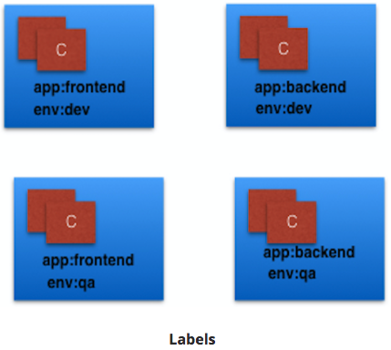
-
Above Labels:
- app / env
-
Label Selectors
- Equality-Based
- filter objects on Label keys and values
=,==,!=operators- Ex: env==dev
- Set-Based
- filter objects on set of values
in,notin,existsoperators- Ex: env in (dev, qa)
- Equality-Based

Discuss Kubernetes building blocks¶
Pods¶
- smallest k8s object.
- unit of deployment in k8s
- represents single instance of the app
- Pod is logical collection of 1+ containers, which:
- Are scheduled together on the same host
- Share the same network namespace
- Mount the same external storage (volumes).

- Ephemeral;
- can not self-heal
- use with controllers
- handle Pod's replication, fault tolerance, self-heal, etc
- use with controllers
- Controller Ex:
- Deployments, ReplicaSets, ReplicationControllers, etc
- Pod Templates
- attach Pod's specificiation to other objects
ReplicationController (rc)¶
- part of master node's controller manager.
- assures specified # replicas for Pod are running.
- controllers like rc always used to create/manage Pods.
- only supports equality-based Selectors.
ReplicaSets¶
- next generation ReplicationController
- support both equality- and set-based selectors
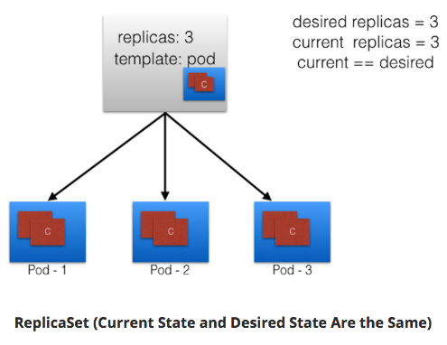
One Pod dies, current state != desired state
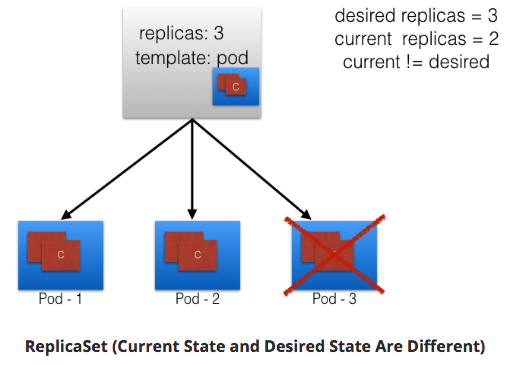
ReplicaSet detects; creates Pod

ReplicaSets can be independent; mostly used by Deployments to orchestrate Pod creation, deletion, updates.
Deployments¶
- object
- automatically creates ReplicaSets.
- provides declarative updates to Pods and ReplicaSets.
- DeploymentController part of master node's controller manager.
- assures curret state == desired state.
- feature: Deployment recording (deployments explained below)
- if something goes wrong - rollback to previous state
Below graphic:
- Deployment creates ReplicaSet A.
- ReplicaSet A creates 3 Pods.
- Each Pod - one container uses nginx:1.7.9.

Next graphic:
- in Deployment
- we change Pods Template & update image for nginx container to nginx:1.9.1.
- Pod Template modified: new ReplicaSet B created.
- process referred to as Deployment rollout.
- rollout only triggered on Pods Template update for deployment.
- Scaling operations do not trigger deployment.
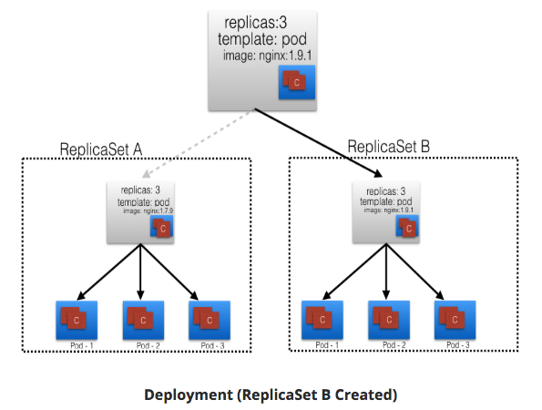
Next graphic:
- When ReplicaSet B ready:
- Deployment points to it.
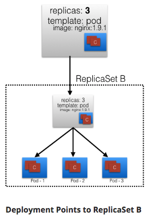
Namespaces¶
- partitions k8s cluster.
- Ex: numerous users - organize into teams/projects.
- names of resources/objects created in Namespace are unique, but not across Namespaces.
List all Namespaces:
$ kubectl get namespaces
NAME STATUS AGE
default Active 11h
kube-public Active 11h
kube-system Active 11h
- k8s creates 2 default Namespaces:
- kube-system
- objects created by k8s system.
- default
- objects from any other Namespace.
- kube-system
- by default, we connect to default Namespace.
- kube-public
- readable by all users.
- used for special purposes (Ex: bootstrapping a cluster).
- Resource Quotas
- divide cluster resources within Namespaces.
Ch.8 Authentication, Authorization, Admission Control¶
Objective:
- Discuss authentication, authorization, and access control stages of the Kubernetes API access.
- Understand the different kinds of Kubernetes users.
- Discuss the different modules for authentication and authorization.
Stages of k8s API access¶
Authentication¶
Logs in user.
- k8s does not have object user, or store usernames.
- k8s can use usernames for access control and request logging.
- Two kinds of users:
- Normal Users
- Managed outside k8s cluster
- via independent services, Ex:
- User/Client Certificates
- file listing usernames/passwords
- Google accounts
- etc
- via independent services, Ex:
- Managed outside k8s cluster
- Service Accounts
- in-cluster processes communicate with API server to perform operations.
- Most Service Account users auto-created via API server
- Can also create manually
- Service Account users tied to given Namespace
- mounts respective credentials to communicate with API server as Secrets.
- Normal Users
Authentication Modules¶
-
Overview:
- Multiple authenticators can be enabled
- first module to successfully authenticate request short-circuits the evaluation.
- to be successful - enable at least 2 methods:
- service account tokens authenticator
- user authenticator
- k8s also supports anonymous requests, if configured
-
Client Certificates
- enable w/reference to file w/1+ cert authorities
- pass
--client-ca-file=SOMEFILEoption to API server. - cert auths in file validate client certs presented to API server.
- Demo Video:
- pass
- enable w/reference to file w/1+ cert authorities
- Static Token File
- pass file w/pre-defined bearer tokens
- pass with
--token-auth-file=SOMEFILEoption to API server. - these tokens last indefinitely.
- cannot change w/o restarting API server
- pass with
- pass file w/pre-defined bearer tokens
- Bootstrap Tokens
- alpha; used in bootstrapping new k8s cluster.
- Static Password File
- pass file w/basic authentication details
- pass w/
--basic-auth-file=SOMEFILEoption to API server. - lasts indefinitely
- change w/API server restart
- pass w/
- pass file w/basic authentication details
- Service Account Tokens
- auto-enabled authenticator
- uses signed bearer tokens to verify requests
- tokens attached to Pods using ServiceAccount Admission Controller.
- allows in-cluster processes to talk to API server.
- OpenID Connect Tokens
- connect with OAuth 2 providers
- Ex: Azure Active Directory, Salesforce, Google, etc
- connect with OAuth 2 providers
- Webhook Token Authentication
- verification of bearer tokens offloaded to remote servce.
- Keystone Password
- pass
--experimental-keystone-url=<AuthURL>option to API Server.- AuthURL is Keystone server endpoint.
- pass
- Authenticating Proxy
- used to program additional authentication logic
Authorization¶
Authorizes API requests.
- After Authentication, users send API requests to perform operations.
- API requests are Authorized
- API request attributes authorized:
- user, group extra, Resource, Namespace, etc
- these attributes evaluated against policies.
- if evalualtion success - request allowed; otherwise denied.
- Multiple Authorization modules/authorizers.
- 1+ module can be configured for k8s cluster
- each module checked in sequence
- if any authorizer approves/denies - that decision is returned immediately.
Authorization Modules¶
- Node Authorizer
- authorizes API requests from kubelets
- authorizes kubelet's:
- read operations for services, endpoints, nodes, etc
- write operators for nodes, pods, events, etc
- Kubernetes documentation
- Attribute-Based Access Control (ABAC) Authorizer
- k8s grants access to API requests - combine policies with attributes.
- Ex: user nkhare can only read Pods in Namespace lfs158:
{ "apiVersion": "abac.authorization.kubernetes.io/v1beta1", "kind": "Policy", "spec": { "user": "nkhare", "namespace": "lfs158", "resource": "pods", "readonly": true } } - enable w/
--authorization-mode=ABACoption to API server.- specify authorization policy:
--authorization-policy-file=PolicyFile.json
- specify authorization policy:
- Kubernetes documentation
- Webhook Authorizer
- k8s offers authorization decisions to 3rd-party services
- enable:
--authorization-webhook-config-file=SOME_FILENAME- SOME_FILENAME: config of remote authorization service
- Kubernetes documentation
- Role-Based Access Control (RBAC) Authorizer
- regulate access to resources based on user assigned roles
- roles: users, service accounts, etc
- enable:
--authorization-mode=RBACto API server. - Kubernetes documentation
- roles assigned operations:
- create, get, update, patch, etc
- operations known as "verbs"
- Two kids of roles:
- Role
- grant access to resource within specific Namespace
kind: Role apiVersion: rbac.authorization.k8s.io/v1 metadata: namespace: lfs158 name: pod-reader rules: - apiGroups: [""] # "" indicates the core API group resources: ["pods"] verbs: ["get", "watch", "list"] - creates pod-reader role
- access only to Pods of lfs158 Namespace.
- grant access to resource within specific Namespace
- ClusterRole
- grany access to resource with cluster-wide scope
- Once Role is created - bind users with RoleBinding
- RoleBinding
- bind users to same namespace as a Role.
kind: RoleBinding apiVersion: rbac.authorization.k8s.io/v1 metadata: name: pod-read-access namespace: lfs158 subjects: - kind: User name: nkhare apiGroup: rbac.authorization.k8s.io roleRef: kind: Role name: pod-reader apiGroup: rbac.authorization.k8s.io - user nkhare access to read Pods of lfs158 Namespace.
- bind users to same namespace as a Role.
- ClusterRoleBinding
- grant access to resources @ cluster-level and to all Namespaces.
- RoleBinding
- Role
- regulate access to resources based on user assigned roles
Admission Control¶
Modules which modify/reject requests based on additional checks:
- Ex: Quota
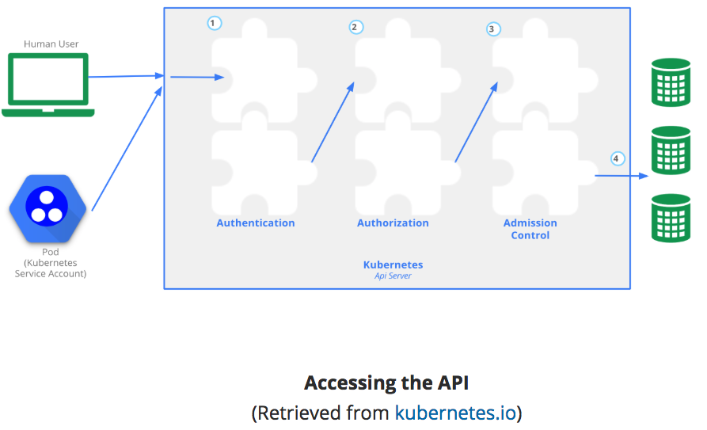
-
Granular access control policies
- allowing privledged containers, checking resource quota, etc
- Resource Controllers:
- ResourceQuota, AlwaysAdmit, DefaultStorageClass, etc
- in effect only after API requests authenticated/authorized
-
enable admission controls:
- start k8s API server w/admission-control
- takes comma-delimited, ordered list of controller names
--admission-control=NamespaceLifecyl,ResourceQuota,PodSecurityPolicy,DefaultStorageClass- Kubernetes documentation
Ch.9 Services¶
Objective:¶
- Discuss the benefits of grouping Pods into Services to access an application.
- Explain the role of the kube-proxy daemon running on each worker node.
- Explore the Service discovery options available in Kubernetes.
- Discuss different Service types.
Connecting Users to Pods¶
- IP's assigned dynamically - Pods are ephemeral.
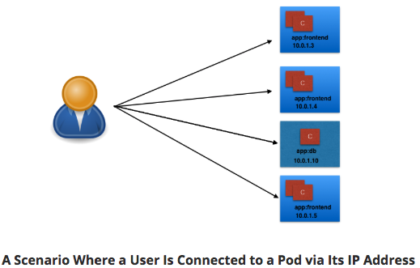
User/Client connected Pod dies - new Pod created. New Pod - New IP.
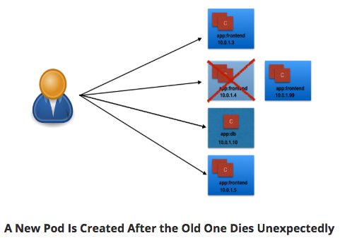
k8s provides Services
- higher level abstraction than IP.
- groups Pods and policy to access them.
- grouping via Labels and Selectors.
Services¶
- app keyword as Label.
- frontend & db values for Pods

- Selectors (app==frontend & app==db)
- groups into 2 logical groups:
- 1 w/3 Pods
- 1 w/1 Pod
- assign name to logical grouping: Service name.
- Ex:
- Two Services:
- frontend-svc
- selector: app==frontend
- db-svc
- selector: app==db
- frontend-svc
- Two Services:

Service Object Example¶
kind: Service
apiVersion: v1
metadata:
name: frontend-svc
spec:
selector:
app: frontend
ports:
- protocol: TCP
port: 80
targetPort: 5000
Explain:
- Service: frontend-svc
- Selects Pods w/Label app==frontend
- Each Service receives IP address by default
- routable only inside cluster
- In Example:
- 172.17.0.4 for frontend-svc Service
- 172.17.0.5 for db-svc Service
- IP address attached to Service known as ClusterIP for that Service.
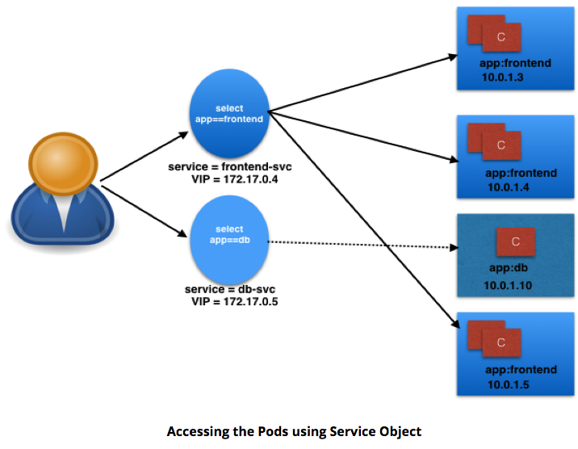
- User/Client connects to service via IP.
- Service forwards traffic to one of attached Pods.
- Service load balances while selecting the Pods for forwarding.
- can select Port to forward
- Ex:
- frontend-svc receives requests from user/client on Port 80.
- frontend-svc forwards to Pod on Port 5000.
- Ex:
- If no port designated:
- Service forwards on same port received
- Service endpoint
- tuple of Pods, IP, targetPort
- Ex:
- frontend-svc has 3 endpoints:
- 10.0.1.3:5000
- 10.0.1.4:5000
- 10.0.1.5:5000
- frontend-svc has 3 endpoints:
kube-proxy¶
- worker nodes run daemon called kube-proxy
- watches API server on master node for addition/removal of Services/endpoints.
- For each new Service, on each node, kube-proxy configures iptables to capture traffic for its ClusterIP & forwards to one of the endpoints.
- When Service removed:
- kube-proxy removes iptables rules on all nodes as well.
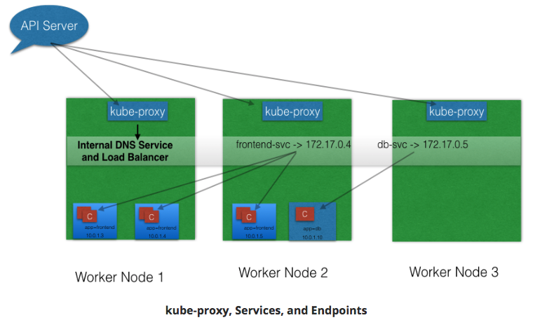
Service Discovery¶
Two methods for discovering Services:
- Environment Variables
- @Pod Start, kubelet daemon on node adds env variables in Pod for all active Services.
- Ex:
- Service: redis-master;
- exposes port 6379
- ClusterIP 172.17.0.6
- then, new Pod:
REDIS_MASTER_SERVICE_HOST=172.17.0.6 REDIS_MASTER_SERVICE_PORT=6379 REDIS_MASTER_PORT=tcp://172.17.0.6:6379 REDIS_MASTER_PORT_6379_TCP=tcp://172.17.0.6:6379 REDIS_MASTER_PORT_6379_TCP_PROTO=tcp REDIS_MASTER_PORT_6379_TCP_PORT=6379 REDIS_MASTER_PORT_6379_TCP_ADDR=172.17.0.6
- Note: Pods will not have env variables for Services created after Pod creation.
- DNS
- most common; recommended.
- addon for DNS.
- creates DNS record for each Service
- format: my-svc.my-namespace.svc.cluster.local
- Services w/same Namespace can talk.
- Ex:
- Service: redis-master in my-ns Namespace.
- All Pods in same Namespace can reach redis Service by using its name: redis-master
- Pods from other Namespaces can reach redis-master Service, by:
- Add respective Namespace as suffix: redis-master.my-ns.
- Ex:
ServiceType¶
- Access scope decided by ServiceType - can be mentioned when creating Service.
- Is the Service:
- only accessible within the cluster?
- accessible from within the cluster and the external world?
- Maps to an external entity which resides outside the cluster?
- Is the Service:
ClusterIP¶
- default ServiceType
- Service receives Virtual IP using ClusterIP.
- assigned IP used for communicating w/Service
- accessible only within Cluster.
NodePort¶
- in addition to creating ClusterIP:
- port range 30000-32767 mapped to respective Service, from all worker nodes.
- Ex:
- mapped NodePort: 32233 for service frontend-svc
- connect to any worker node on 32233
- node redirects all traffic to ClusterIP - 172.17.0.4
- Default:
- when expose NodePort => random port auto-selected by k8s Master from range 30000-32767.
- can assign specific port to avoid dynamic port value while creating service.

- NodePort ServiceType can make Services accessible to external world.
- end-user connects to worker nodes on specified port
- worker node forwards traffic to apps running inside cluster.
- admins can configure reverse proxy outside k8s cluster
- map specific endpoint to respective port on worker nodes
LoadBalancer¶
- NodePort & ClusterIP Services automatically created
- external load balancer will route to them
- Services exposed @ static port on each worker node
- Service exposed externally w/underlying cloud provider's load balance feature.

- LoadBalancer ServiceType only works if:
- underlying IaaS supports automatic creation of Load Balancers
- and
- support in k8s (GCP/AWS)
- underlying IaaS supports automatic creation of Load Balancers
ExternalIP¶
- Service mapped to ExternalIP if it can route to one or more worker nodes.
- Traffic ingressed with ExternalIP (as destination IP) on Service port is routed to one of the Service endpoints.

- Note:
- ExternalIPs not managed by k8s.
- cluster admins configure routing to map ExternalIP address to one of the nodes.
ExternalName¶
- ExternalName special ServiceType
- no Selectors
- does not define any endpoints
- when accessed within cluster:
- returns CNAME record of externally configured Service.
- make externally configured Services (my-database.example.com) available inside cluster
- requires just the name (like, my-database)
- available inside same Namespace
Ch.10 Deploying a Stand-Alone Application¶
- Objective:
- Deploy an application from the dashboard.
- Deploy an application from a YAML file using kubectl.
- Expose a service using NodePort.
- Access the application from the external world.
Minikube GUI¶
minikube start
minikube status
minikube dashboard
- Deploy webserver usign nginx:alpine image:
- Dashboard:
- click: CREATE
- Dashboard:

- Tab: CREATE AN APP
- Enter as seen:

- Click: DEPLOY

kubectl CLI¶
kubectl get deployments
kubectl get replicasets
kubectl get pods
Labels / Selectors¶
kubectl describe pod webserver-74d8bd488f-xxxxx
kubectl get pods -L k8s-app,label2
# -L option = add additional columns in output
kubectl get pods -l k8s-app=webserver
# -l option = selector
Delete Deployment¶
kubectl delete deployments webserver
# Also deletes ReplicaSets & Pods
Deployment YAML¶
- Create webserver.yaml
# webserver.yaml
apiVersion: apps/v1
kind: Deployment
metadata:
name: webserver
labels:
app: nginx
spec:
replicas: 3
selector:
matchLabels:
app: nginx
template:
metadata:
labels:
app: nginx
spec:
containers:
- name: nginx
image: nginx:alpine
ports:
- containerPort: 80
kubectl create -f webserver.yaml
Create / Expose w/NodePort¶
- ServiceTypes: define access method for given Service.
- With NodePort ServiceType k8s opens static port on all worker nodes.
- Connect to open static port from any node - forwarded to respective Service.
Create webserver-svc.yaml:
# webserver-svc.yaml
apiVersion: v1
kind: Service
metadata:
name: web-service
labels:
run: web-service
spec:
type: NodePort
ports:
- port: 80
protocol: TCP
selector:
app: nginx
kubectl create -f webserver-svc.yaml
kubectl get svc
NAME TYPE CLUSTER-IP EXTERNAL-IP PORT(S) AGE
kubernetes ClusterIP 10.96.0.1 <none> 443/TCP 4d
web-service NodePort 10.108.132.106 <none> 80:31791/TCP 3m
- ClusterIP: 10.108.132.106
- Port: 80:31791
- We've reserved static port 31791 on node.
- If connect to node on that port - request forwarded to ClusterIP on port 80.
Deployment / Service creation can happen in any order.
kubectl describe svc web-service
web-service uses app=nginx as Selector, which selects the three Pods - listed as endpoints. So, whenever a request is sent to our Service - served by one of Pods listed in Endpoints section.
Access App Using Exposed NodePort¶
minikube ip
Open browser @ listed IP and kubectl describe svc web-service NodePort.
or, at CLI:
minikube service web-service
Liveness / Readiness Probes¶
- Liveness Probe
- checks application health
- if fails - restarts container
- Set by Defining:
- Liveness Command
- Liveness HTTP request
- TCP Liveness Probe
- checks application health
Liveness Command¶
- Check existence of file /tmp/healthy:
# liveness-exec.yaml
apiVersion: v1
kind: Pod
metadata:
labels:
test: liveness
name: liveness-exec
spec:
containers:
- name: liveness
image: k8s.gcr.io/busybox
args:
- /bin/sh
- -c
- touch /tmp/healthy; sleep 30; rm -rf /tmp/healthy; sleep 600
livenessProbe:
exec:
command:
- cat
- /tmp/healthy
initialDelaySeconds: 3
periodSeconds: 5
kubectl create -f liveness-exec.yaml
kubectl get pods
kubectl describe pod liveness-exec
Liveness HTTP Request¶
- kubelet sends HTTP GET request to /healthz endpoint of application on port 8080.
# liveness-http.yaml
apiVersion: v1
kind: Pod
metadata:
labels:
test: liveness
name: liveness-exec
spec:
containers:
- name: liveness
image: k8s.gcr.io/busybox
args:
- /bin/sh
- -c
- touch /tmp/healthy; sleep 30; rm -rf /tmp/healthy; sleep 600
livenessProbe:
httpGet:
path: /healthz
port: 8080
httpHeaders:
- name: X-Custom-Header
value: Awesome
initialDelaySeconds: 3
periodSeconds: 3
TCP Liveness Probe¶
- kubelet attempts to open TCP socket to the container running application.
# liveness-tcp.yaml
apiVersion: v1
kind: Pod
metadata:
labels:
test: liveness
name: liveness-exec
spec:
containers:
- name: liveness
image: k8s.gcr.io/busybox
args:
- /bin/sh
- -c
- touch /tmp/healthy; sleep 30; rm -rf /tmp/healthy; sleep 600
livenessProbe:
tcpSocket:
port: 8080
initialDelaySeconds: 15
periodSeconds: 20
Readiness Probes¶
Application must meet conditions before receiving traffic.
# readiness-probe.yaml
apiVersion: v1
kind: Pod
metadata:
labels:
test: readiness
name: readiness-exec
spec:
containers:
- name: readiness
image: k8s.gcr.io/busybox
args:
- /bin/sh
- -c
- sleep 20; touch /tmp/healthy; sleep 20; rm -rf /tmp/healthy; sleep 600
readinessProbe:
exec:
command:
- cat
- /tmp/healthy
initialDelaySeconds: 5
periodSeconds: 5
Ch.11 Kubernetes Volume Management¶
- Explain the need for persistent data management.
- Discuss Kubernetes Volume and its types.
- Discuss PersistentVolumes and PersistentVolumeClaims.
Volumes¶
Containers, and their data, are ephemeral. Solve with Volumes.

- Volume attached to a Pod, shared among containers in Pod.
- Volume has same life span as Pod.
- Outlives containers of Pod.
- Data preserved across container restart.
Volume Types¶
Directory mounted in Pod backed by underlying Volume Type - decides properties of directory (size, content, etc).
- emptyDir
- empty Volume created for Pod as soon as it's scheduled on worker node.
- Volume life coupled with Pod.
- Pod dies - content of emptyDir deleted.
- hostPath
- share a directory from the host to Pod.
- Pod dies - content of Volume available on host.
- gcePersistentDisk
- mount Google Compute Engine (GCE) persistent disk into Pod.
- awsElasticBlockStore
- mount AWS EBS Volume into Pod.
- nfs
- mount NFS share into Pod.
- iscsi
- mount iSCSI share into Pod.
- secret
- pass sensitive information (passwords) to Pods.
- persistentVolumeClaim
- attach PersistentVolume to Pod.
Persistent Volumes¶
Network-attached storage in the cluster - provisioned by admin.
- PersistentVolume (PV) subsystem
- provides APIs for users/admins to manage / consume storage.
- Manage: PersistentVolume API resource type.
- Consume: PersistentVolumeClaim API resource type.

- PersistentVolumes can be dynamically provisioned based on StorageClass resource.
- StorageClass contains pre-defined provisioners and parameters to create a PersistentVolume.
- Using PersistentVolumeClaims:
- User sends request for dynamic PV creation.
- wired to StorageClass resource.
- User sends request for dynamic PV creation.
- Volume Types that support managing using PersistentVolumes:
- GCEPersistentDisk
- AWSElasticBlockStore
- AzureFile
- NFS
- iSCSI
- Complete List: Kubernetes Documentation
PersistentVolumeClaims¶
- PersistentVolumeClaim (PVC) is user request for storage.
- User requests for PersistentVolume resources based on size, access models, etc.
- Once suitable PersistentVolume is found:
- bound to a PersistentVolumeClaim.

After successful bound, PersistentVolumeClaim resource can be used in Pod.

When finished - attached PersistentVolumes can be released, reclaimed, recycled.
Container Storage Interface (CSI)¶
- Container orchestrators (k8s, Mesos, Docker, etc) each have unqiue method of managing external storage using Volumes.
- Storage Vendors can't keep up with differences.
- Let's standardize!
Ch.12 Deploying a Multi-Tier Application¶
- Analyze a sample multi-tier application.
- Deploy a multi-tier application.
- Scale an application.
RSVP Application¶
- users register for event.
- provide username/email.
- name/email goes in table.
- App:
- backend database: MongoDB
- frontend: Python Flask-based

Code: github - rsvp.py - look for MONGODB_HOST env variable for db endpoint. - connect to it on port 27017
MONGODB_HOST=os.environ.get('MONGODB_HOST', 'localhost')
client = MongoCLient(MONGODB_HOST, 27017)
- Deploy with 1 backend / 1 frontend
- then, scale
Backend¶
# rsvp-db.yaml
apiVersion: apps/v1
kind: Deployment
metadata:
name: rsvp-db
labels:
appdb: rsvpdb
spec:
replicas: 1
selector:
matchLabels:
appdb: rsvpdb
template:
metadata:
labels:
appdb: rsvpdb
spec:
containers:
- name: rsvp-db
image: mongo:3.3
ports:
- containerPort: 27017
kubectl create -f rsvp-db.yaml
Create mongodb service.
# rsvp-db-service.yaml
apiVersion: v1
kind: Service
metadata:
name: mongodb
labels:
app: rsvpdb
spec:
ports:
- port: 27017
protocol: TCP
selector:
appdb: rsvpdb
kubectl create -f rsvp-db-service.yaml
- did not specify ServiceType
- mongodb has default ClusterIP ServiceType.
- mongodb will not be accessible from external world.
kubectl get deployments
kubectl get services
Frontend¶
- using Python Flask-based microframework
- source: https://raw.githubusercontent.com/cloudyuga/rsvpapp/master/rsvp.py
- Docker image: teamcloudyuga/rsvpapp
- Dockerfile to create teamcloudyuga/rsvpapp: https://raw.githubusercontent.com/cloudyuga/rsvpapp/master/Dockerfile
Create Deployment for rsvp Frontend.
# rsvp-web.yaml
apiVersion: apps/v1
kind: Deployment
metadata:
name: rsvp
labels:
app: rsvp
spec:
replicas: 1
selector:
matchLabels:
app: rsvp
template:
metadata:
labels:
app: rsvp
spec:
containers:
- name: rsvp-app
image: teamcloudyuga/rsvpapp
env:
- name: MONGODB_HOST
value: mongodb
ports:
- containerPort: 5000
name: web-port
kubectl create -f rsvp-web.yaml
- passing name of MongoDB Service, mongodb, as env variable.
- expected by frontend
- Note Ports:
- containerPort 5000
- name: web-port
- Can change underlying containerPort without making changes Service.
Create Service for rsvp Frontend.
# rsvp-web-service.yaml
apiVersion: v1
kind: Service
metadata:
name: rsvp
labels:
app: rsvp
spec:
type: NodePort
ports:
- port: 80
targetPort: web-port
protocol: TCP
selector:
app: rsvp
kubectl create -f rsvp-web-service.yaml
- Note:
- targetPort in ports section.
- forwards requests on port 80 for ClusterIP to web-port port (5000) on connected Pods.
- targetPort in ports section.
Look @ available deployments and services:
kubectl get deployments
kubectl get services
Access RSVP Application¶
minikube ip
# NodePort Port
kubectl get services
minikube service rsvp

Scale Frontend¶
Scale from 1 to 4 replicas:
kubectl scale deployment rsvp --replicas=3
kubectl get deployments
Refreshing site will show multiple Host: rsvp-xxx-xxx as routed to different endpoints.
Ch.13 ConfigMaps and Secrets¶
- Discuss configuration management for applications in Kubernetes using ConfigMaps.
- Share sensitive data (such as passwords) using Secrets.
ConfigMaps¶
- decouples config details from container image.
- pass as key-value pairs
- later consumed by Pods, controllers, other system components, etc.
- Create by:
- literal value
- files
Create ConfigMap @ CLI¶
kubectl create configmap my-config --from-literal=key1=value1 --from-literal=key2=value2
Get ConfigMap Details¶
kubectl get configmaps my-config -o yaml
Create ConfigMap from file.¶
# customer1-configmap.yaml
apiVersion: v1
kind: ConfigMap
metadata:
name: customer1
data:
TEXT1: Customer1_Company
TEXT2: Welcomes You
COMPANY: Customer1 Company Technology Pct. Ltd.
kubectl create -f customer1-configmap.yaml
Use ConfigMap in Pods¶
While creating deployment - assign values for env variables from customer1 ConfigMap:
# container
....
containers:
- name: rsvp-app
image: teamcloudyuga/rsvpapp
env:
- name: MONGODB_HOST
value: mongodb
- name: TEXT1
valueFrom:
configMapKeyRef:
name: customer1
key: TEXT1
- name: TEXT2
valueFrom:
configMapKeyRef:
name: customer1
key: TEXT2
- name: COMPANY
valueFrom:
configMapKeyRef:
name: customer1
key: COMPANY
....
- TEXT1 env var: "Customer1_Company"
- TEXT2 env var: "Welcomes You"
Mount ConfigMap as Volume¶
- Kubernetes documentation on ConfigMaps.
- For Each key:
- file in mount path is key
- content of file becomes value
Secrets¶
- Shares sensitive info (pws, tokens, keys)
- passed as key-value pairs
- Secret objects are referenced in Deployments.
- Secret data stored as plain text inside etcd.
kubectl create secret generic my-password --from-literal=password=my3q1p@ssw0rd
kubectl get secret my-password
kubectl describe secret my-password
Create Secret Manually¶
With Secrets, each object must be encoded using base64.
echo mysqlpassword | base64
Use base64 encoded password in config file:
# my-password.yaml
apiVersion: v1
kind: Secret
metadata:
name: my-password
type: Opaque
data:
password: bXlzcWxwYXNzd29yZAo=
base64 != encryption:
echo "bXlzcWxwYXNzd29yZAo=" | base64 --decode
Use Secrets Inside Pods¶
- expose as env variable
- or
- mount as data volume
Environment Variable¶
Reference a Secret & assign value of its key as env variable WORDPRESS_DB_PASSWORD:
.....
spec:
containers:
- image: wordpress:4.7.3-apache
name: wordpress
env:
- name: WORDPRESS_DB_HOST
value: wordpress-mysql
- name: WORDPRESS_DB_PASSWORD
valueFrom:
secretKeyRef:
name: my-password
key: password
.....
Mount as Volume¶
- Secrets as Files from Pod:
- mount Secret as Volume inside Pod.
- file created for each key in Secret
- contents = value
Ch.14 Ingress¶
- Objective:
- Explain what Ingress and Ingress Controllers are.
- Learn when to use Ingress.
- Access an application from the external world using Ingress.
Ingress allows updates to app w/o worrying about external access.
"An Ingress is a collection of rules that allow inbound connections to reach the cluster Services."
- Ingress configures Layer 7 HTTP load balancer for Services.
- Provides:
- TLS (Transport Layer Security)
- Name-based virtual hosting
- Path-based routing
- Custom roles

- Users don't connect directly to Service.
- Users reach Ingress endpoint, forwarded to respective Service.
# webserver-ingress.yaml
apiVersion: extensions/v1beta1
kind: Ingress
metadata:
name: web-ingress
namespace: default
spec:
rules:
- host: blue.example.com
http:
paths:
- backend:
serviceName: webserver-blue-svc
servicePort: 80
- host: green.example.com
http:
paths:
- backend:
serviceName: webserver-green-svc
servicePort: 80
-
Above, Example of Name-Based Virtual Hosting Ingress rule:
- User requests to both blue.example.com & green.example.com routed to same Ingress endpoint.
- forwarded to webserver-blue-svc & webserver-green-svn, respectively.
-
Below, Example of Fan Out Ingress rules:
- requests: example.com/blue & example.com/green
- forwarded: webserver-blue-svc & webserver-green-svc, respectively.

Ingress Controller¶
- Ingress Controller watches Master Node's API server for changes in Ingress resources
- updates Layer 7 Load Balancer accordingly.
- k8s has several Ingress Controllers:
- GCE L7 Load Balancer
- Nginx Ingress Controller
- can also build your own
Start Ingress Controller w/Minikube¶
Minikube v0.14.0+ contains Nginx Ingress Controller setup as addon:
minikube addons enable ingress
Deploy Ingress Resource¶
# webserver-ingress.yaml
apiVersion: extensions/v1beta1
kind: Ingress
metadata:
name: web-ingress
namespace: default
spec:
rules:
- host: blue.example.com
http:
paths:
- backend:
serviceName: webserver-blue-svc
servicePort: 80
- host: green.example.com
http:
paths:
- backend:
serviceName: webserver-green-svc
servicePort: 80
kubectl create -f webserver-ingress.yaml
Access Services Using Ingress¶
- Should now have access to:
- webserver-blue-svc & webserver-green-svc
- via
- blue.example.com & green.example.com
- webserver-blue-svc & webserver-green-svc
Setup on Minikube (local VM), update host config file (/etc/hosts on Mac/Linux):
minikube ip
192.168.99.100
cat /etc/hosts
127.0.0.1 localhost
::1 localhost
192.168.99.100 blue.example.com green.example.com
Ch.15 Advanced Topics¶
Annotations¶
- Attach arbitrary non-identifying metadata to any objects, K-V
"annotations": {
"key1" : "value1",
"key2" : "value2"
}
- Not used to ID/select objects, instead:
- Store buid/release IDs, PR numbers, git branch ,etc
- Phone/pager numbers of people responsible, directory entries specifying where that info can be found
- Pointers to logging, monitoring, analytics, audit repositories, debugging tools, etc.
- Etc
Ex: While Create Deployment, add description like:
apiVersion: extensions/v1beta1
kind: Deployment
metadata:
name: webserver
annotations:
description: Deployment based PoC dates 2nd June'2017
....
Look @ annotations while describing object:
kubectl describe deployment webserver
Name: webserver
Namespace: default
CreationTimestamp: Sat, 03 Jun 2017 05:10:38 +0530
Labels: app=webserver
Annotations: deployment.kubernetes.io/revision=1
description=Deployment based PoC dates 2nd June'2017
...
Deployment Features¶
Record Deployment, revert if wrecks.

If recorded Deployment before update, revert back to known working state:

- Deployment Object also provides:
- Autoscaling
- Proportional scaling
- Pausing and resuming.
Jobs¶
- Creates 1+ Pods to perform task.
- Job object takes responsibility of Pod failures.
- Assures task completed successfully.
- Task complete - Pods terminate automatically.
- Can be scheduled for times/dates. CronJob
Quota Management¶
- ResourceQuota object.
- Provides contraints that limit aggregate resource consumption per Namespace.
- Types of Quotas per Namespace:
- Compute Resource Quota
- limit total sum of compute resources (CPU, memory, etc) which can be requested in Namespace.
- Storage Resource Quota
- Limit sum of storage resources (PersistentVolumeClaims, requests.storage, etc).
- Object Count Quota
- Restrict # objects of given type (Pods, ConfigMaps, PersistentVolumeClaims, ReplicationControllers, Services, Secrets, etc).
- Compute Resource Quota
DaemonSets¶
- DaemonSet object allows:
- collecting monitoring data from all nodes.
- running storage daemon on all nodes.
- etc.
- specific type of Pod running on all nodes at all times.
- When Node added to Cluster:
- Pod from given DaemonSet created on it.
- When Node dies
- Respective Pods garbage collected.
- If DaemonSet deleted - all Pods it created are deleted as well.
StatefulSets¶
- StatefulSet controller used for apps requiring unique identity:
- name
- network identifications
- strict ordering
- etc, Ex:
- MySQL cluster, etcd cluster
- Provides ID and guaranteed ordering of deployment and scaling of Pods.
Kubernetes Cluster Federation¶
- Manage multiple k8s clusters from single control plane.
- Sync resources across clusters & cross-cluster discovery.
- Allows Deployments across regions, and access using global DNS record.
- Useful w/hybrid solutions:
- Cluster inside private datacenter.
- and
- Cluster on public cloud.
- Cluster inside private datacenter.
- Can assign weights for each cluster in the Federation - distribute load.
Custom Resources¶
- A resource is an API endpoint which stores a collection of API objects.
- Ex: Pod resource contains all Pod objects.
- k8s existing resources fullfill most requirements.
- Can create new resources using custom resources
- dynamic in nature
- appear/disappear in already running cluster @ anytime.
- dynamic in nature
- Make resource declarative:
- create/install custom controller
- interprets resource structure
- performs required actions
- can be deployed/managed in pre-running clusters
- create/install custom controller
- Two Methods to Add Custom Resources:
- Custom Resource Definitions (CRDs)
- Easiest
- doesn't require programming knowledge
- building custom controller would require some programming
- API Aggregation
- Fine grained control
- subordinate API servers
- sit behind primary API server & act as proxy
- Custom Resource Definitions (CRDs)
Helm¶
- k8s manifests:
- Deployments
- Services
- Volume Claims
- Ingress
- etc
- Chart
- Can bundle manifests after templatizing them into well-defined format, along with other metadata.
- can be served via repositories
- like rpm & deb packages.
- Helm:
- Package manager (like yum & apt) for k8s.
- install/update/delete Charts in k8s cluster.
- Two components:
- Client - Helm - runs on user's workstation.
- Server - tiller - runs inside k8s cluster.
- Client helm connects to server tiller to manage Charts.
- Github Helm Charts
Monitoring and Logging¶
Collect resource usage data by Pods, Services, nodes, etc to determine scaling decisions.
- Heapster
- cluster-wide aggregator of monitoring & event data
- native k8s support
- Prometheus
- part of CNCF
- can be used to gather resource usage from k8s components and objects.
- Using client libraries - can instrument code of app.
Logging important for debugging - collected from objects, nodes, etc.
- Elasticsearch
- Uses fluentd w/custom config as an agent on nodes.
- open source data collector.
- part for CNCF.
- Uses fluentd w/custom config as an agent on nodes.
Ch.16 Community¶
- Understand the importance of Kubernetes community.
- Learn about the different channels to interact with the Kubernetes community.
- List major CNCF events.
K8sPort - recognizes / rewards community members
- Weekly Meetings using video conference tools.
- Meetup Groups
- Slack Channels: #kubernetes-users
- Mailing Lists
- Special Interest Groups
- Scheduling, authorization, networking, documentation, etc
- Existing SIGs
- New SIG Creation
- Stack Overflow
- CNCF Events
- Three of the major conferences it organizes are:
- KubeCon + CloudNativeCon Europe
- KubeCon + CloudNativeCon North America
- KubeCon + CloudNativeCon China.
- Three of the major conferences it organizes are:
Next Course: - Kubernetes Fundamentals - Kubernetes Administrator - Certified Kubernetes Adminsitrator Exam - Certified Kubernetes Application Developer Program